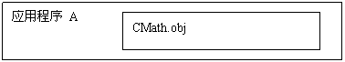
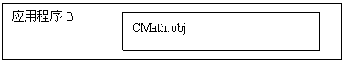
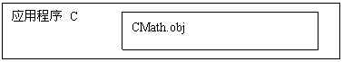
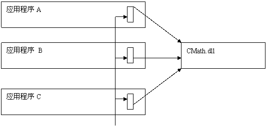
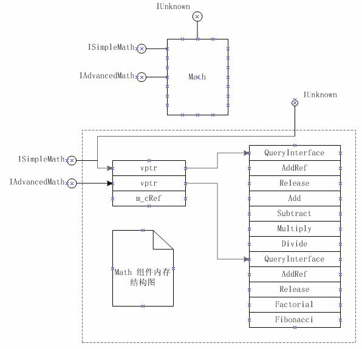

|
一、COM是一个更好的C++
1、COM 是什么 Don Box 说"COM IS LOVE"。COM 的全称是 Component Object Model 组件对象模型。 2、从 C++ 到 DLL 再到 COM 2.1 C++ 如某一软件厂商发布一个类库(CMath四则运算)，此时类库的可执行代码将成为客户应用中不可分割的一部分。假设此类库的所产生的机器码在目标可执行文件中占有4MB的空间。当三个应用程序都使用CMath库时，那么每个可执行文件都包含4MB的类库代码(见图1.1)。当三个应用程序共同运行时，他们将会占用12MB的虚拟内存。问题还远不于此。一旦类库厂商发现CMath类库有一个缺陷后，发布一个新的类库，此时需要要求所有运用此类库的应用程序。此外别无他法了。  http://www.vckbase.com/document/journal/vckbase26/images/comimg1.gif  http://www.vckbase.com/document/journal/vckbase26/images/comimg2.gif  http://www.vckbase.com/document/journal/vckbase26/images/comimg3.gif 图1.1 CMath 的三个客户 2.2 DLL 解决上面问题的一个技术是将CMath类做成动态链接库(DLL ，Dynamic Link Library)的 形式封装起来 。 在使用这项技术的时候，CMath的所有方法都将被加到 CMath dll 的引出表(export list)中，而且链接器将会产生一个引入库(import library)。这个库暴露了CMath的方法 成员的符号 。当客户链接引入库时，有一些存根会被引入到可执行文件中，它在运行时通知装载器动态装载 CMath Dll。 当 CMath 位于dll中时，他的运行模型见图1.2  http://www.vckbase.com/document/journal/vckbase26/images/comimg4.gif 图1.2 CMath引入库 2.3 COM "简单地把C++类定义从dll中引出来"这种方案并不能提供合理的二进制组件结构。因为C++类那既是接口也是实现。这里需要把接口从实现中分离出来才能提供二进制组件结构。此时需要有二个C++类，一个作为接口类另一个作为实现类。让我们开始COM之旅吧。 http://www.vckbase.com/document/image/paragraph.gif 二、COM基础1、 COM基本知识 1.1 返回值HRESULT COM要求所有的方法都会返回一个HRESULT类型的错误号。HRESULT 其实就一个类型定义： typedef LONG HRESULT;有关HRESULT的定义见 winerror.h 文件 // Values are 32 bit values layed out as follows: // // 3 3 2 2 2 2 2 2 2 2 2 2 1 1 1 1 1 1 1 1 1 1 // 1 0 9 8 7 6 5 4 3 2 1 0 9 8 7 6 5 4 3 2 1 0 9 8 7 6 5 4 3 2 1 0 // +-+----+-------------------------+---------------------------------+ // |S| Res| Facility | Code | // +-+----+-------------------------+---------------------------------+ // // where // // S - is the severity code // // 0 - Success // 1 - Error // // Res- is a reserved bit // // Facility - is the facility code // // Code - is the facility''s status code我们一般下面的宏来判断方法是否成功： #define SUCCEEDED(hr)(long(hr)>=0) #define FAILED(hr)(long(hr)<0)1.2 初识 IDL 每个标准的COM组件都需要一个接口定义文件，文件的扩展名为 IDL。让我们看IUnknow接口的定义文件是怎样的。 [
local,
object,
uuid(00000000-0000-0000-C000-000000000046),
pointer_default(unique)
]
interface IUnknown
{
typedef [unique] IUnknown *LPUNKNOWN;
cpp_quote("//////////////////////////////////////////////////////////////////")
cpp_quote("// IID_IUnknown and all other system IIDs are provided in UUID.LIB")
cpp_quote("// Link that library in with your proxies, clients and servers")
cpp_quote("//////////////////////////////////////////////////////////////////")
HRESULT QueryInterface(
[in] REFIID riid,
[out, iid_is(riid)] void **ppvObject);
ULONG AddRef();
ULONG Release();
}
[local]属性禁止产生网络代码。
[object]属性是表明定义的是一个COM接口，而不是DEC风格的接口。
[uuid]属性给接口一个GUID。
[unique]属性表明null(空)指针为一个合法的参数值。
[pointer_defaul]属性所有的内嵌指针指定一个默认指针属性
typedef [unique] IUnknown *LPUNKNOWN;这是一个类型定义
cpp_quote这个比较有趣，这是一个在idl文件写注解的方法。这些注解将保存到***.h和***_i.c文件中
[in]表示这个参数是入参
[out]表示这个参数是出参
[iid_is(riid)]表示这个参数需要前一个的riid 参数。 注意：所有具有out属性的参数都需要是指针类型。
1.3 IUnkown接口 在整个例子除了IUnkown这个东西，其他应该不会感到陌生吧！COM要求(最基本的要求)所有的接口都需要从IUnknown接口直接或间接继承，所以IUnknown接口有"万恶之源"之称。 IUnkown接口定义了三个方法。 HRESULT QueryInterface([in] REFIID riid,[out] void **ppv); ULONG AddRef(); ULONG Release();其中 AddReft() 和Release()负责对象引用计数用的，而 QueryInterface()方法是用于查询所实现接口用的。每当COM组件被引用一次就应调用一次AddRef()方法。而当客户端在释放COM组件的某个接口时就需要调用Release()方法。 这里所讲的请在下面的例子仔细体会。 2、一个比较简单的COM 此例子共有四个文件组成：
#ifndef INTERFACE_H
#define INTERFACE_H
#include <unknwn.h>
//{7C8027EA-A4ED-467c-B17E-1B51CE74AF57}
static const GUID IID_ISimpleMath =
{ 0x7c8027ea, 0xa4ed, 0x467c, { 0xb1, 0x7e, 0x1b, 0x51, 0xce, 0x74, 0xaf, 0x57 } };
//{CA3B37EA-E44A-49b8-9729-6E9222CAE84F}
static const GUID IID_IAdvancedMath =
{ 0xca3b37ea, 0xe44a, 0x49b8, { 0x97, 0x29, 0x6e, 0x92, 0x22, 0xca, 0xe8, 0x4f } };
interface ISimpleMath : public IUnknown
{
public:
virtual int Add(int nOp1, int nOp2) = 0;
virtual int Subtract(int nOp1, int nOp2) = 0;
virtual int Multiply(int nOp1, int nOp2) = 0;
virtual int Divide(int nOp1, int nOp2) = 0;
};
interface IAdvancedMath : public IUnknown
{
public:
virtual int Factorial(int nOp1) = 0;
virtual int Fabonacci(int nOp1) = 0;
};
#endif 此文件首先 #include <unknwn.h> 将
IUnknown 接口定义文件包括进来。
接下来定义了两个接口，GUID（Globally Unique Identifier全局唯一标识符）它能保证时间及空间上的唯一。 ISmipleMath接口里定义了四个方法，而IAdvancedMath接口里定义了二个方法。这些方法都是虚函数，而整个 ISmipleMath 与 IAdvancedMath 抽象类就作为二进制的接口。 2.2 math.h文件 #include "interface.h"
class CMath : public ISimpleMath,
public IAdvancedMath
{
private:
ULONG m_cRef;
private:
int calcFactorial(int nOp);
int calcFabonacci(int nOp);
public:
//IUnknown Method
STDMETHOD(QueryInterface)(REFIID riid, void **ppv);
STDMETHOD_(ULONG, AddRef)();
STDMETHOD_(ULONG, Release)();
// ISimpleMath Method
int Add(int nOp1, int nOp2);
int Subtract(int nOp1, int nOp2);
int Multiply(int nOp1, int nOp2);
int Divide(int nOp1, int nOp2);
// IAdvancedMath Method
int Factorial(int nOp);
int Fabonacci(int nOp);
}; 此类为实现类，他实现了ISmipleMath和IAdvancedMath两个接口类(当然也可以只实现一个接口类)。
请注意：m_cRef 是用来对象计数用的。当 m_cRef 为0组件对象应该自动删除。 2.3 math.cpp文件 #include "interface.h"
#include "math.h"
STDMETHODIMP CMath::QueryInterface(REFIID riid, void **ppv)
{// 这里这是实现dynamic_cast的功能，但由于dynamic_cast与编译器相关。
if(riid == IID_ISimpleMath)
*ppv = static_cast
此文件是CMath类定义文件。
2.4 simple.cpp文件 #include "math.h"
#include <iostream>
using namespace std;
int main(int argc, char* argv[])
{
ISimpleMath *pSimpleMath = NULL;//声明接口指针
IAdvancedMath *pAdvMath = NULL;
此文件相当于客户端的代码，首先创建一个CMath对象,再根据此对象去查询所需要的接口，如果正确得到所需接口指针，再调用接口的方法，最后再将接口的释放掉。
2.5 Math组件的二进制结构图  http://www.vckbase.com/document/journal/vckbase26/images/comimg6.jpg 图1.3 Math组件二进制结构图 2.6 小结 此例子从严格意义上来并不是真正的COM组件(他不是dll)，但他已符合COM的最小要求(实现IUnknown接口)。接下来我们来做一COM dll(但还不用ATL)。 （待续） |